Best-performing dependency parser can parse about 400 sentences per second.
For large-scale analyses, this is cost-prohibitive.
And constituency parsers are slower still.
The English Wikipedia corpus contains about 90 million sentences.
To parse the entirety of this corpus, it would take 2.25x105 seconds.
Or 2.6 days.
Project Overview
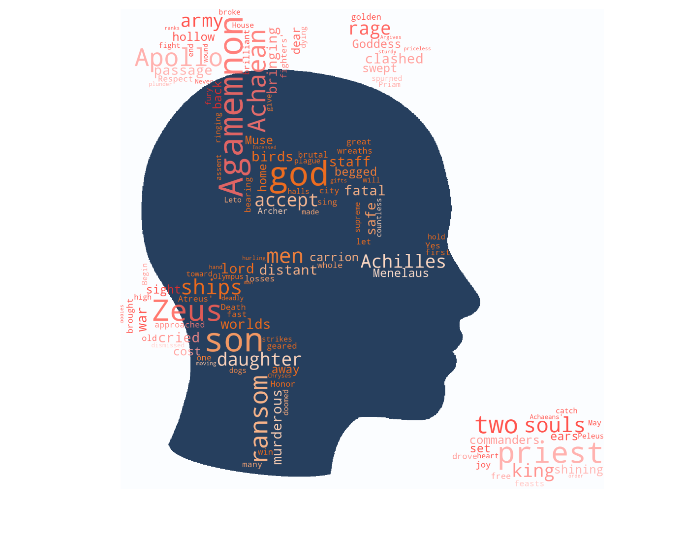
"Chunk-and-Pass"
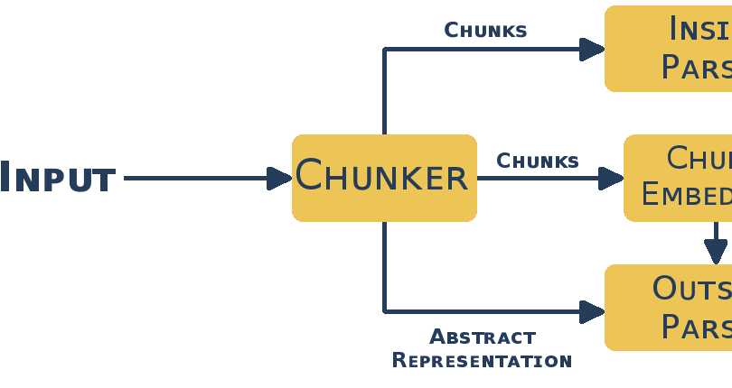
Implementation
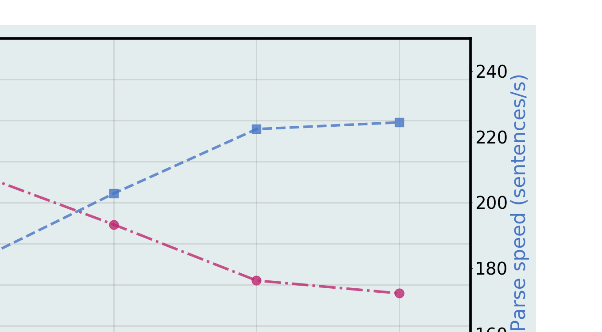
Results
FASTPARSE Project
ERC Starting Grant project FASTPARSE led by Prof. Carlos Gómez-Rodríguez at the University of A Coruña.
"The main goal of this frontier research project is to develop new algorithms and techniques to improve the speed of natural language parsers, making them suitable for web-scale processing."
Until a threshold on the global chunk error rate is met.
Size of extracted rulesets
Frequencies of rules
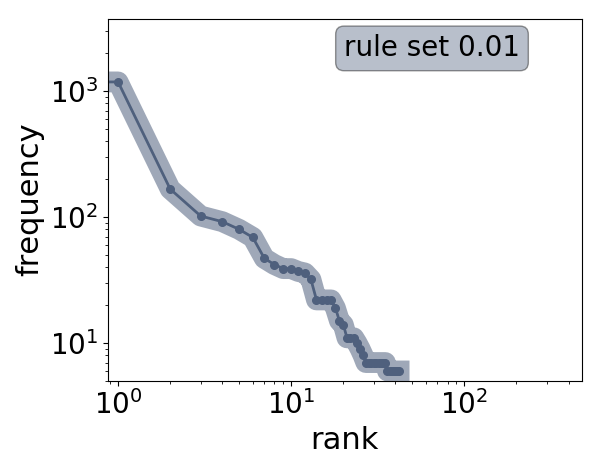
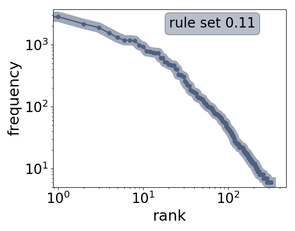
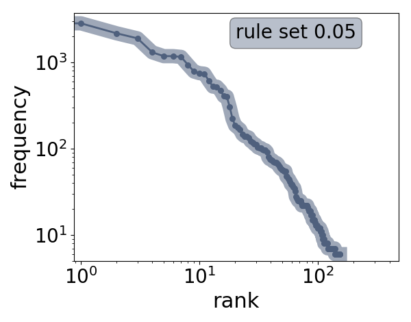
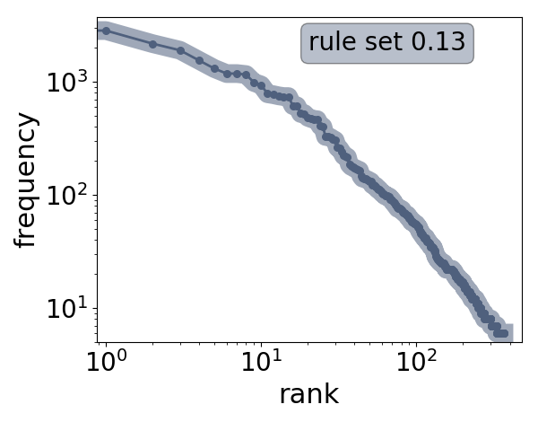
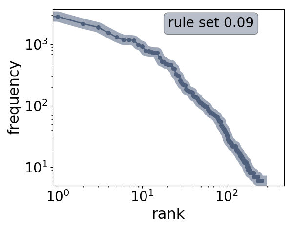
Distribution of rule lengths
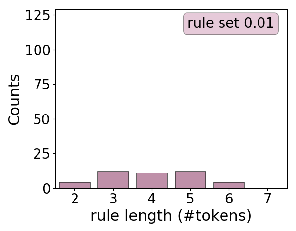
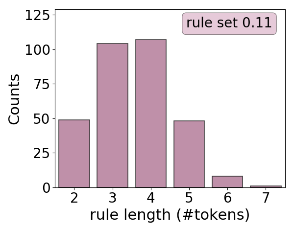
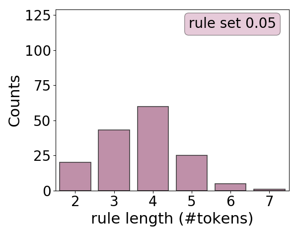
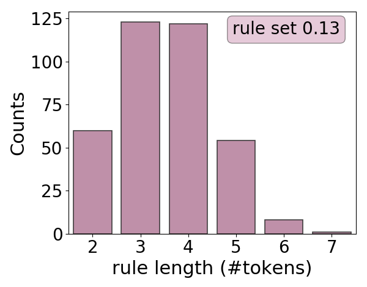
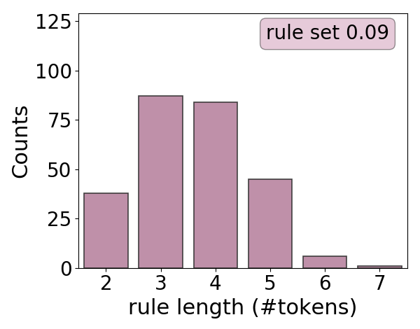
Encode UD data as IOB format using a rule set
IOB UD data fed to NCRF++ implemented neural network.
Tokens labelled as part of a chunk sent to the inside parser.
The abstract sentence form is sent to the outside parser.
Chunker Implementation
We use the neural sequence toolkit NCRF++ developed by Yang and Zhang, 2018.
Features: POS tags
Character embedding dimensions: 30
Word embedding dimensions: 50
GloVe pretrained embeddings
Character layer: CNN (4 hidden layers, dim=50)
Word layer: BiLSTM (1 hidden layer, dim=200)
Inference later: CRF
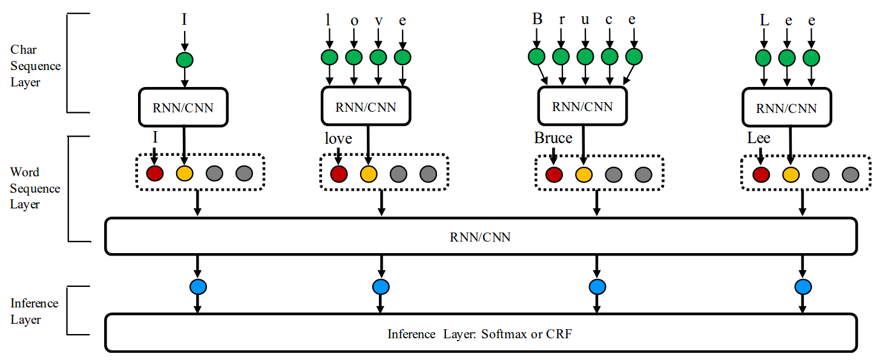
From Yang and Zhang (2018).
Inside parser
Faster parsers
MaltParser with liblinear (Nivre et al., 2007)
Parsito (Straka et al., 2015)
Feedforward NN (Chen and Manning, 2014)
Outside parser
Accurate parsers
BIST parser (Kiperwasser and Goldberg, 2016)
Biaffine Attention(Dozat and Manning, 2016)
Dynamic Programming parser (Goméz-Rodríguez et al., 2018)
Parsers used for following results:
Inside parser
MaltParser with liblinear - Arc Eager
Outside parser
Stack-based Arc Standard
Feed-forward NN
Chunk embeddings: head only
Project Overview
"Chunk-and-Pass"
Implementation
Results
Chunk compression definition:
compression = #tokens⁄(#chunks + #tokensout)
NCRF++ Chunker Performance
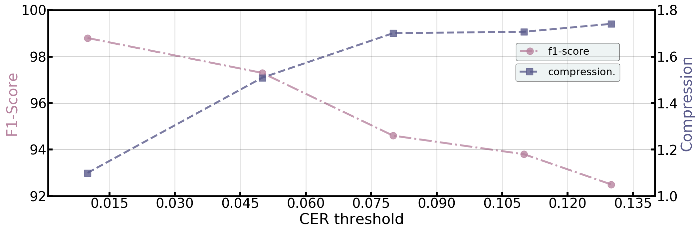
"Chunk-and-Pass" parser results
UD English EWT v2.1
Inside Parser
Outside Parser
Full Parser
Ruleset
UAS
LAS
UAS
LAS
UAS
LAS
Compression
Speed (TPS)
0.01
98.98
98.74
83.99
81.80
85.27
83.26
1.10
2197.5
0.05
95.70
95.39
81.41
78.06
85.03
82.79
1.51
2619.6
0.09
95.13
94.74
79.83
75.09
84.60
82.89
1.70
3346.1
0.11
95.47
94.97
78.92
74.33
84.10
81.50
1.71
3423.7
0.15
94.53
93.95
80.50
75.51
84.51
81.68
1.74
3490.4
baseline
-
-
-
-
85.85
84.09
-
2352.0
Full System Performance of Supervised Chunker.
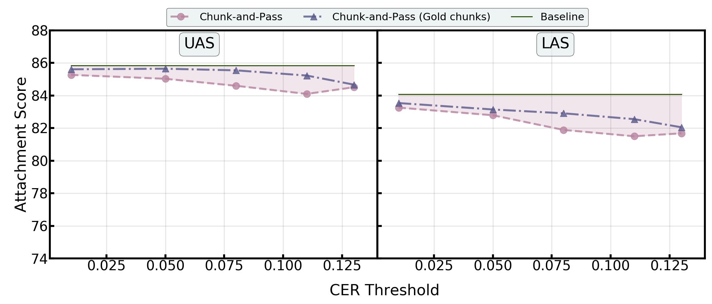
Inside, Outside, and Full System Performance with NCRF++.
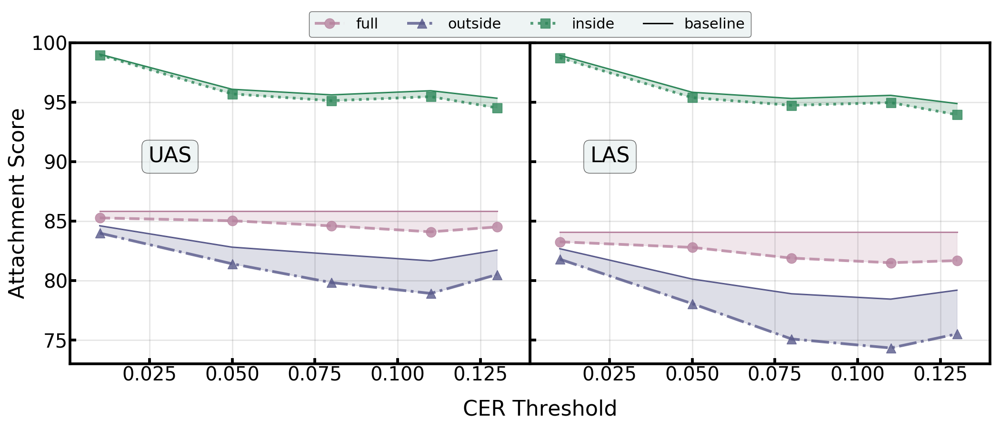
Preliminary speeds (TPS/SPS) and compression.
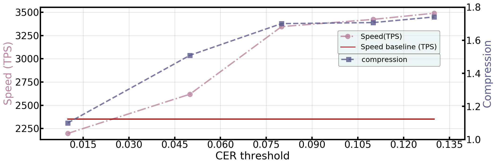
Performance against speed.
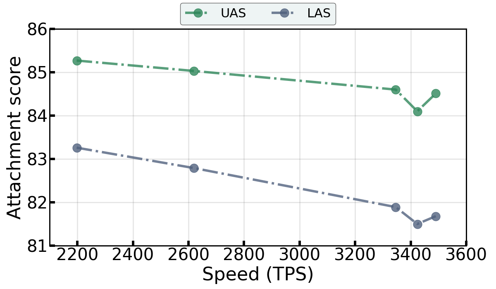
Concluding Remarks.
Shown efficacy of approach.
Preliminary results: no major loss in score and some improvements in speed.
Increase parsing performance
Experiment with different embedding techniques.
Increase outside parser performance: explicitly pass more info about chunks?
Increase parsing speed
Refine implementation.
Experiment with different architectures.
Use more robust outside parsers.
Acknowledgements
Work completed under the supervision of Carlos Goméz-Rodríguez and in collaboration with David Vilares.
This work has received funding from the European Research Council (ERC), under the European
Union’s Horizon 2020 research and innovation programme (FASTPARSE, grant agreement No 714150).
Bibliography
Gómez-Rodríguez, C. (2017). Towards fast natural language parsing: FASTPARSE ERC Starting Grant. Procesamiento del Lenguaje Natural, 59.
Dozat, T., Qi, P., & Manning, C. D. (2017). Stanford's Graph-based Neural Dependency Parser at the CoNLL 2017 Shared Task. Proceedings of the CoNLL 2017 Shared Task: Multilingual Parsing from Raw Text to Universal Dependencies, 20-30.
Kiperwasser, E., & Goldberg, Y. (2016). Simple and accurate dependency parsing using bidirectional LSTM feature representations. arXiv preprint arXiv:1603.04351.
Chen, D., & Manning, C. (2014). A fast and accurate dependency parser using neural networks. In Proceedings of the 2014 conference on empirical methods in natural language processing (EMNLP) (pp. 740-750).
Zhang, G., Wang, Y., & Ji, D. (2012, October). An improved model of MST for Chinese dependency parsing. In Cloud Computing and Intelligent Systems (CCIS), 2012 IEEE 2nd International Conference on (Vol. 3, pp. 1454-1458). IEEE.
Christiansen, M. H., & Chater, N. (2016). The Now-or-Never bottleneck: A fundamental constraint on language. Behavioral and Brain Sciences, 39.
Nivre, J., Hall, J., Nilsson, J., Chanev, A., Eryigit, G., Kübler, S., ... & Marsi, E. (2007). MaltParser: A language-independent system for data-driven dependency parsing. Natural Language Engineering, 13(2), 95-135.
Straka, M., Hajic, J., Straková, J., & Hajic jr, J. (2015). Parsing universal dependency treebanks using neural networks and search-based oracle. In International Workshop on Treebanks and Linguistic Theories (TLT14) (pp. 208-220).
Gómez-Rodríguez, C., Shi, T., & Lee, L. (2018). Global transition-based non-projective dependency parsing. arXiv preprint arXiv:1807.01745.
Yang, J., & Zhang, Y. (2018). NCRF++: An Open-source Neural Sequence Labeling Toolkit. arXiv preprint arXiv:1806.05626.
Thanks
Extra Slides
NCRF++ Chunker Performance with different features